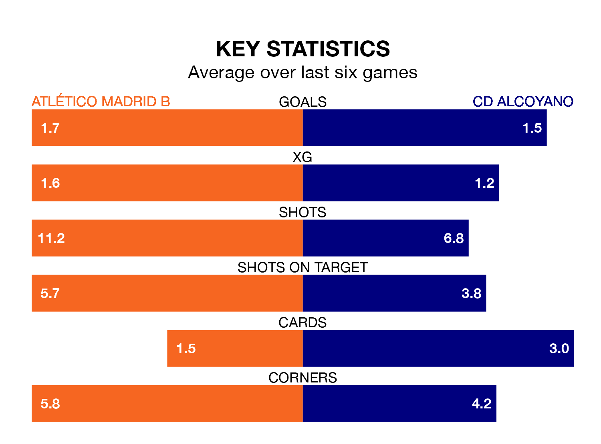

Atlético Madrid B host CD Alcoyano on Sunday at Miniestadio Cerro del Espino in Primera Division RFEF Group 2.
In their last league match, on February 18, Atlético Madrid B beat CD Atlético Baleares 3-0 at home, with goals from Adrián Niño Heredia (two) and Diego Vicente Bri Carrazoni.
Alcoyano also won, 2-0 away at UD Melilla, with José María Pérez García and Pablo Ganet Cómitre on the scoresheet.
With 37 goals in 24 games so far this season, Atlético Madrid B are scoring more than average in the league with 1.5 goals per game. But they are conceding more than average too, letting in 34 goals at a rate of 1.4 per game.
Alcoyano, meanwhile, are below average scorers, with 1.0 goal per game, compared to a league average of 1.1. They have also conceded 1.0 goal per game.
In Bri Carrazoni, the hosts have one of the league's most on-form strikers so far this season. He has notched seven goals in 21 appearances, to sit sixth in the scoring charts.
His goal rate of one every 208 minutes is quicker than that of Imanol García Lugea, the away side's top scorer with a goal every 364 minutes, and a total of four goals in 21 games.
Atlético Madrid B are in mixed form in Primera Division RFEF Group 2, with two wins and two draws from their last six games.
With three wins and a draw over that period, Alcoyano's form is slightly better – they have taken 10 points from 18, compared to Atlético Madrid B's eight.
The home team are 12th in the table after 24 games, of which they have won seven and drawn nine, earning 30 points.
Alcoyano are one place ahead of Atlético Madrid B in 11th, with nine wins and five draws putting them on 32 points.
Updated: 10:08 (UTC), 23/02/24